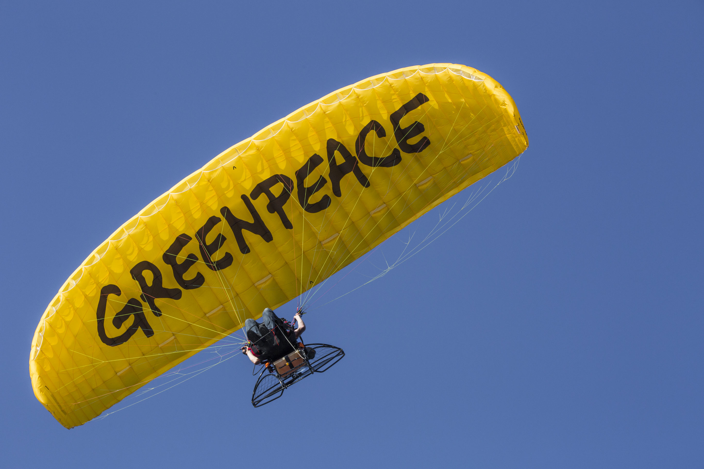

Not only you, everybody´s life relies on the environment and nature.

Environmental protection association
Would you like to do more for the environment and get active? You can do this by joining an environmental protection association, for example Greenpeace. This way you can make other people aware of climate change and also get politically involved.
You can read the latest information on climate change on various news portals, including "tagesschau.de". The information is presented there in an easily understandable way, kept up to date and you don't have to worry about receiving fake news.
A government's political stance has a massive impact on how the issue of climate change is perceived in different countries. Well-defined climate targets also make the population happy and are easier to implement. Various policy statements can be accessed online via official websites, which usually also provide information and tips for consumers.